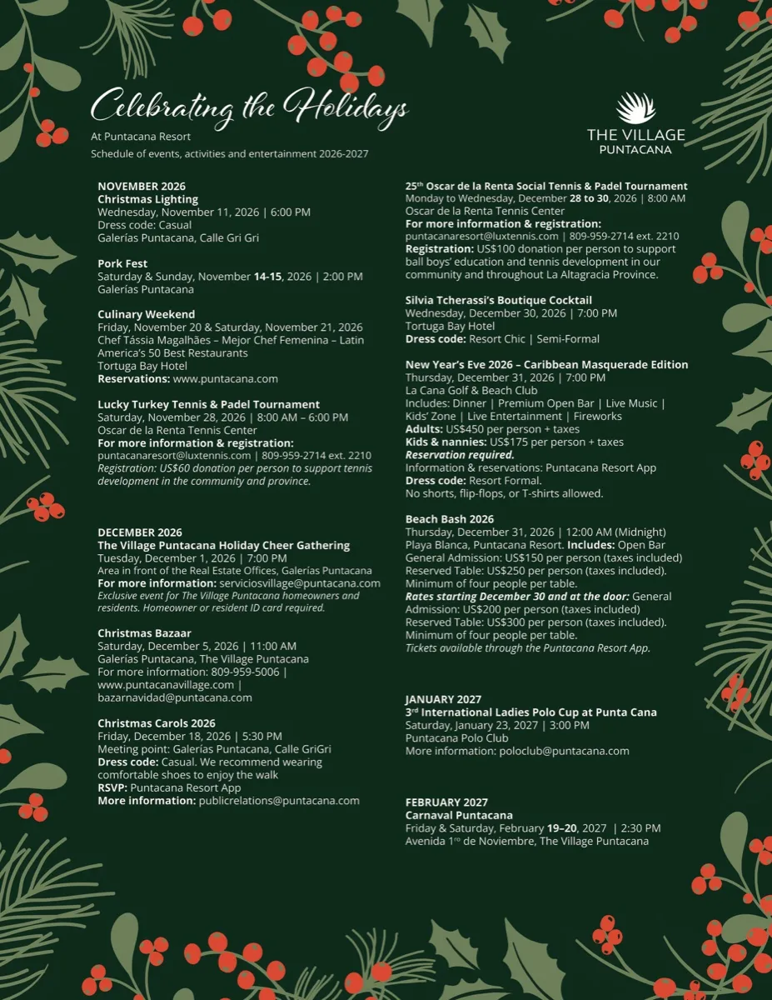
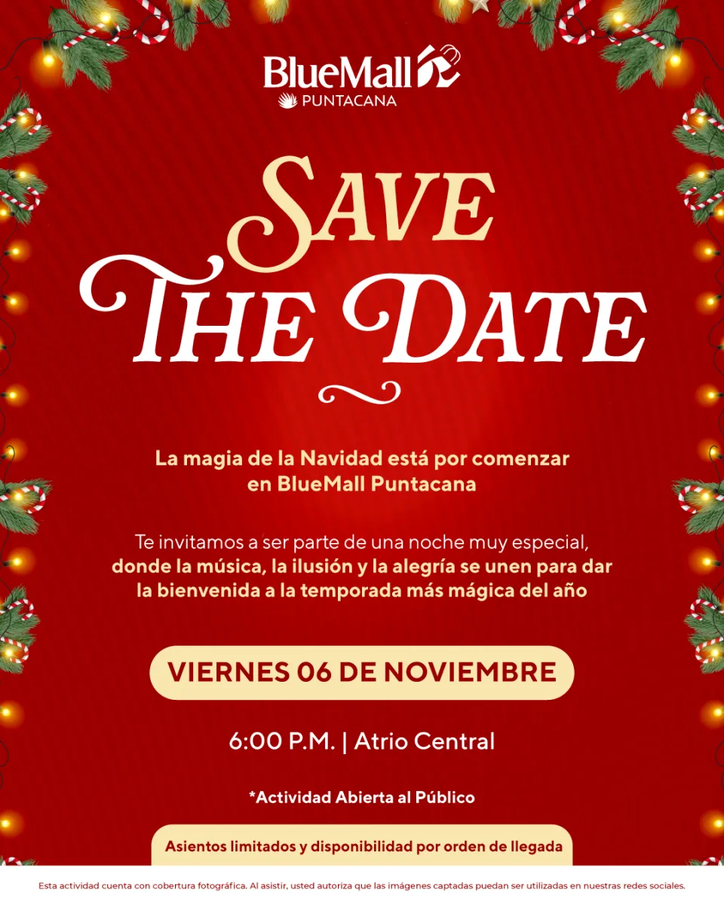
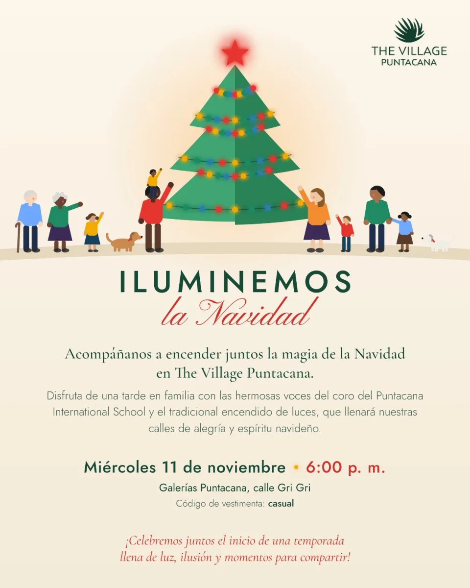
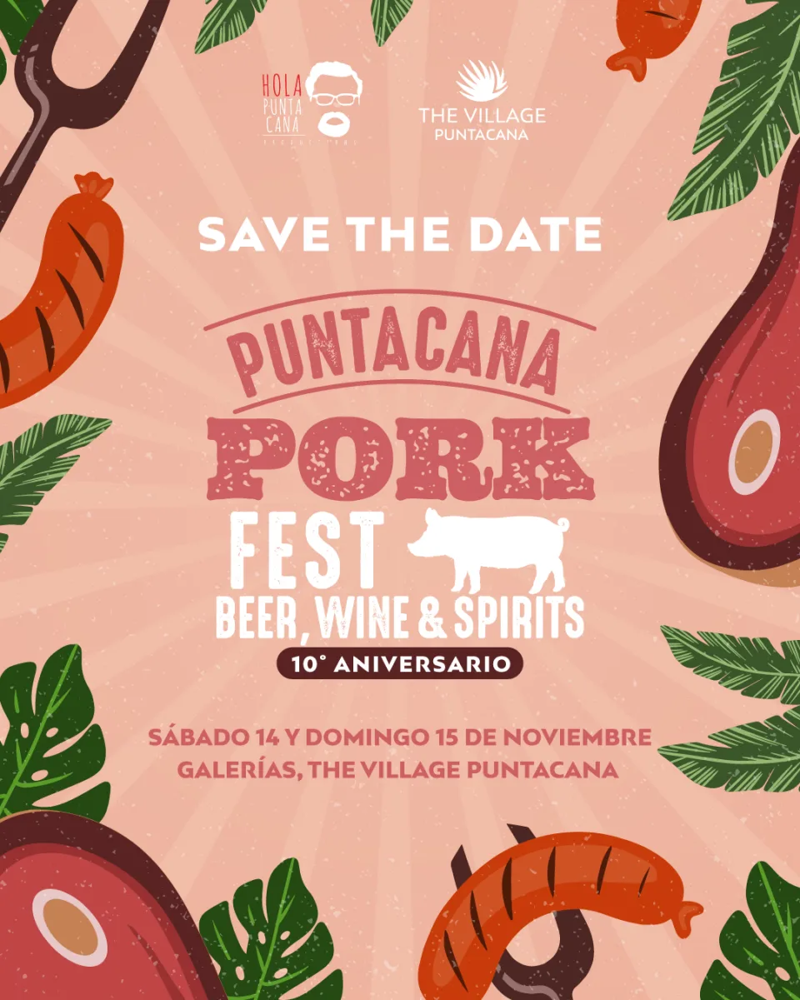
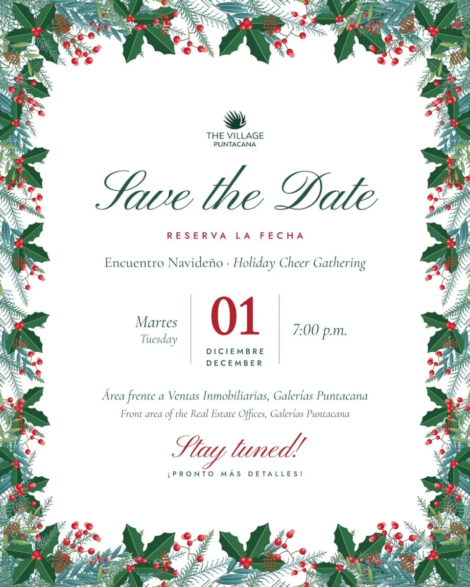
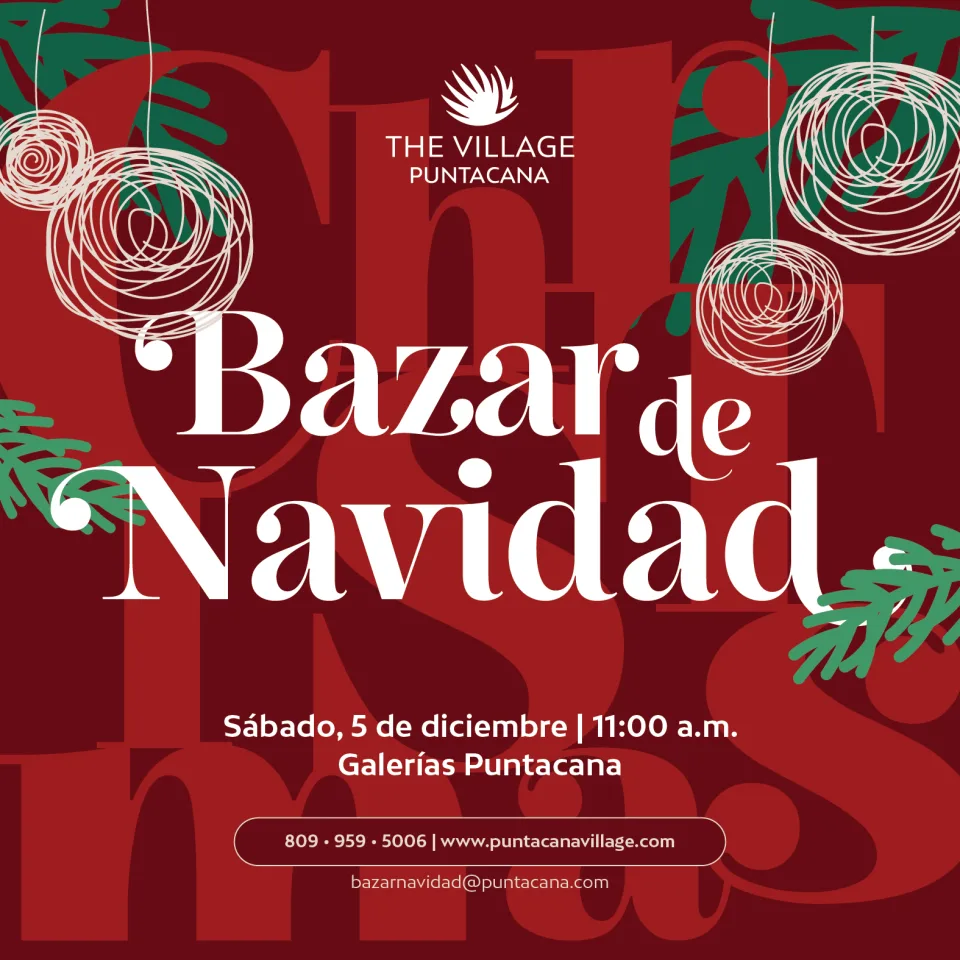

Local calendar
Punta Cana holiday events 2026–27: Christmas, New Year’s Eve, and Carnival
From Christmas markets and resort celebrations to New Year’s Eve on the beach, the holiday season brings a full calendar to Punta Cana. Here are the dates and details shared by The Village Puntacana, Puntacana Resort, Tortuga Bay Hotel, and BlueMall Puntacana.


November 2026
Friday, November 6: BlueMall Puntacana holiday kickoff
BlueMall Puntacana invites the public to its holiday-season event at Atrio Central, starting at 6:00 p.m. The invitation notes limited seating, available first come, first served.


Wednesday, November 11: Christmas Lighting
The Village Puntacana’s Christmas lighting is scheduled for 6:00 p.m. at Galerías Puntacana, Calle Gri Gri. The listed dress code is casual.


Saturday and Sunday, November 14–15: Puntacana Pork Fest
The 10th-anniversary Pork Fest is listed at Galerías, The Village Puntacana, starting at 2:00 p.m. both days.


Friday and Saturday, November 20–21: Culinary Weekend at Tortuga Bay
Chef Tássia Magalhães of Nelita Restaurant in Brazil is featured for a two-day culinary weekend at Tortuga Bay Hotel. The event highlights Italian cuisine reimagined through Brazilian roots. Reservations are listed at puntacana.com.

Saturday, November 28: Lucky Turkey Tennis & Padel Tournament
The Oscar de la Renta Tennis Center lists the tournament from 8:00 a.m. to 6:00 p.m. Registration is a US$60 donation per person to support tennis development in the community. For information, contact puntacanatennisresort@luxtennis.com or call 809-959-2714, extension 2210.
December 2026
Tuesday, December 1: The Village Puntacana Holiday Cheer Gathering
This residents’ gathering is scheduled for 7:00 p.m. in front of the Real Estate Offices at Galerías Puntacana. It is exclusive to The Village Puntacana homeowners and residents; an owner or resident ID is required. Information: serviciosvillage@puntacana.com.


Saturday, December 5: Christmas Bazaar
The bazaar starts at 11:00 a.m. at Galerías Puntacana, The Village Puntacana. For details, call 809-959-5006, email bazarnavidad@puntacana.com, or visit puntacanavillage.com.


Friday, December 18: Christmas Carols
The carols walk begins at 5:30 p.m.; the meeting point is Calle Gri Gri, Galerías Puntacana. The suggested dress is casual, with comfortable shoes. RSVP through the Puntacana Resort app. More information: publicrelations@puntacana.com.
Monday through Wednesday, December 28–30: Oscar de la Renta Social Tennis & Padel Tournament
The tournament is scheduled at 8:00 a.m. at the Oscar de la Renta Tennis Center. Registration is a US$100 donation per person supporting ball boys’ education and tennis development. Contact puntacanatennisresort@luxtennis.com or call 809-959-2714, extension 2210.
Wednesday, December 30: Sylvia Tcherassi’s Boutique Cocktail
The cocktail is listed for 7:00 p.m. at Tortuga Bay Hotel. The dress code is Resort Chic / Semi-Formal.
Thursday, December 31: New Year’s Eve at La Cana Golf & Beach Club
The 7:00 p.m. celebration includes dinner, premium open bar, live music, a kids’ zone, entertainment, and fireworks. The listed price is US$450 per adult plus taxes and US$175 per child or nanny plus taxes. Reservations are required through the Puntacana Resort app. Resort Formal dress is required; shorts, flip-flops, and T-shirts are not allowed.
Thursday, December 31: Beach Bash at Playa Blanca
The midnight event at Playa Blanca, Puntacana Resort, includes an open bar. General admission is listed at US$150 per person and reserved tables at US$250 per person, taxes included, with at least four people per table. From December 30 and at the door, the listed prices rise to US$200 for general admission and US$300 per person for a reserved table. Tickets are available through the Puntacana Resort app.
January and February 2027
Saturday, January 23: International Ladies Polo Cup
The polo event is scheduled for 3:00 p.m. at Puntacana Polo Club. For more information, email poloclub@puntacana.com.
Friday and Saturday, February 19–20: Carnaval Puntacana
The calendar lists Carnival at 2:30 p.m. on Avenida 1.º de Noviembre, The Village Puntacana.
Make Punta Cana your home base
Compare our homes in Punta Cana Village and Cap Cana for your next visit.